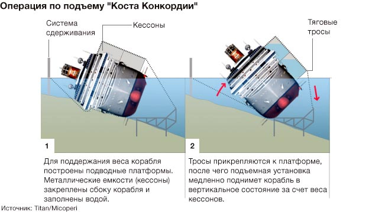
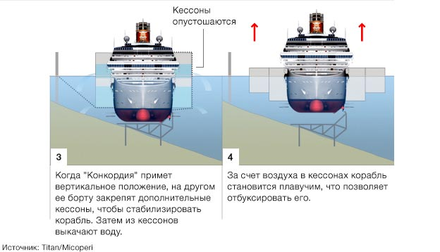
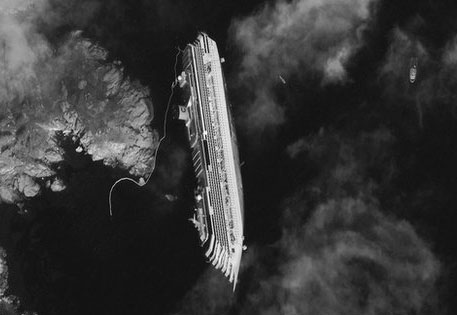
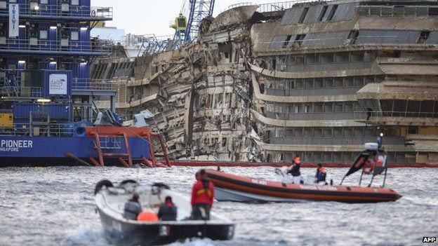

Коста Конкордия
2013-09-17
Подробности операции смотрите по ссылке на ВВС.
В январе 2012 года судно с пассажирами село на мель у острова Джильо, Италия.
Несколько членов экипажа признаны виновными в аварии.
Капитан "Коста Конкордии" обвиняется так же в том, что он покинул тонущий лайнер.
Затонувший лайнер "Коста Конкордия" поставлен на киль (BBC)


Фотография со спутника до подъёма корабля

Первые кадры процесса подъёма судна в ночь с 16 на 17 сентября
Фотография 2013-09-17
Через 20 месяцев после крушения судно годится только в металлолом.
